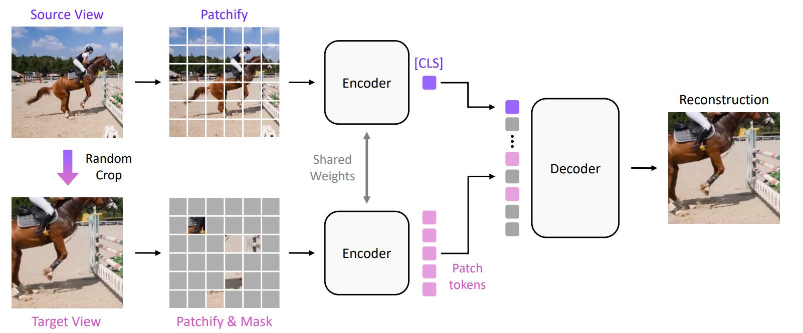
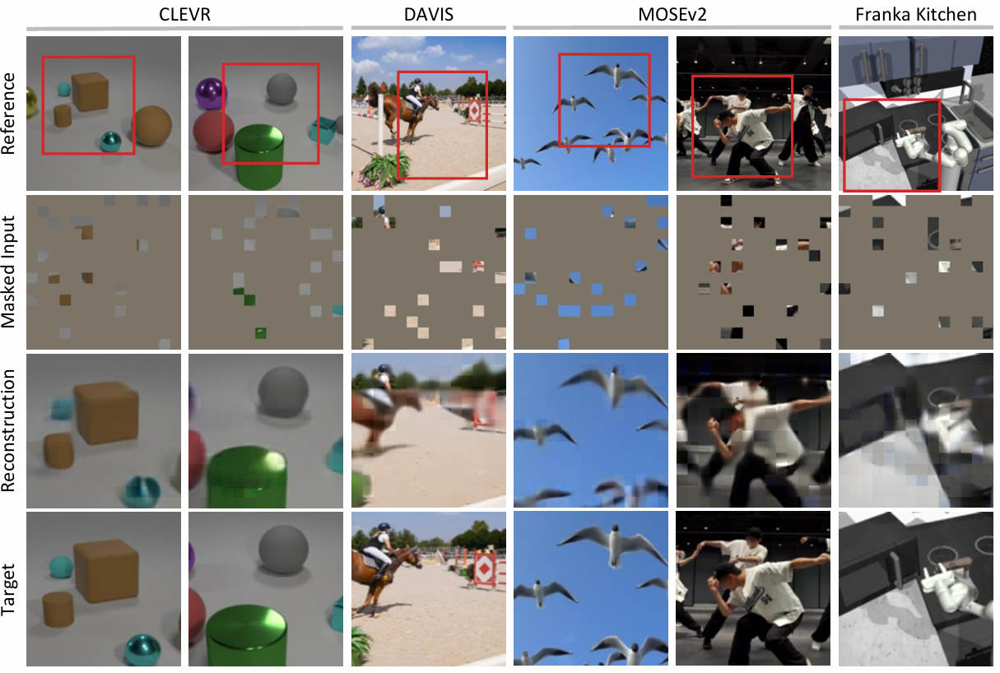
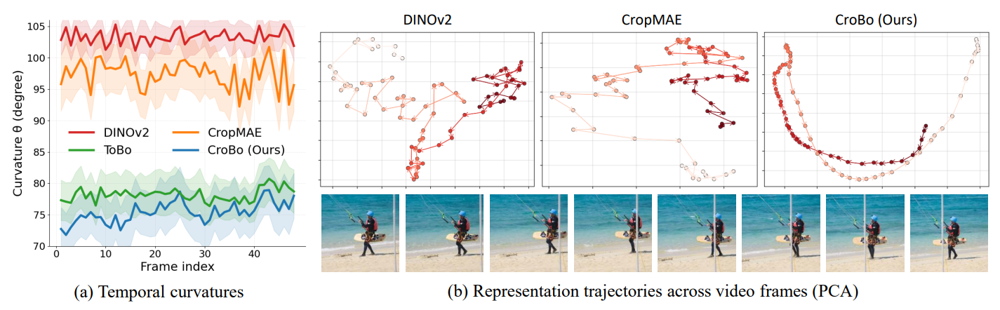
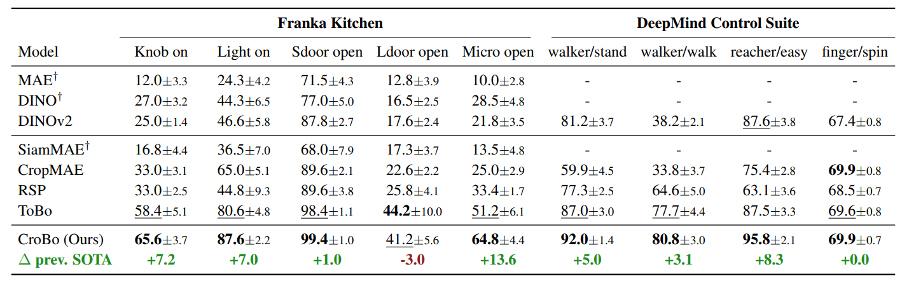

For robotic agents operating in dynamic environments, learning visual state representations from streaming video observations is essential for sequential decision making. Recent self-supervised learning methods have shown strong transferability across vision tasks, but they do not explicitly address what a good visual state should encode. We argue that effective visual states must capture what-is-where by jointly encoding the semantic identities of scene elements and their spatial locations, enabling reliable detection of subtle dynamics across observations. To this end, we propose CroBo, a visual state representation learning framework based on a global-to-local reconstruction objective. Given a reference observation compressed into a compact bottleneck token, CroBo learns to reconstruct heavily masked patches in a local target crop from sparse visible cues, using the global bottleneck token as context. This learning objective encourages the bottleneck token to encode a fine-grained representation of scene-wide semantic entities, including their identities, spatial locations, and configurations. As a result, the learned visual states reveal how scene elements move and interact over time, supporting sequential decision making. We evaluate CroBo on diverse vision-based robot policy learning benchmarks, where it achieves state-of-the-art performance. Reconstruction analyses and perceptual straightness experiments further show that the learned representations preserve pixel-level scene composition and encode what-moves-where across observations.
Figure 1. CroBo architecture. A global source view is encoded by a vision backbone into a compact bottleneck token. The decoder then reconstructs the pixel content of heavily masked patches sampled from a local crop of the same frame, using sparse visible hints and the global bottleneck context. The high masking ratio (90%) compels the bottleneck to store precise what-is-where information across the entire observation.

Figure 2. Reconstruction quality. CroBo accurately restores masked patches across diverse scenes — CLEVR (synthetic objects), DAVIS (natural video), MOSEv2 (complex and crowded video), and Franka Kitchen (robot manipulation) — faithfully preserving both object identity and spatial location from the bottleneck token alone.

Figure 3. Perceptual straightness. CroBo produces smoother representation trajectories over time (75.4° mean curvature) compared to DINOv2 (103.28°). Straighter trajectories indicate that the latent space better reflects smooth visual state transitions, benefiting sequential decision-making.

Figure 4. Benchmark comparison. CroBo achieves state-of-the-art performance on Franka Kitchen (best on 4/5 tasks, including +13.6% on Micro Open) and competitive results across DeepMind Control Suite manipulation and locomotion tasks.
For inquiries, please reach out via email:
Seokmin Lee (First Author) — lsm9434@gmail.com
Byeongju Woo (Corresponding Author) — byeongju@umich.edu
You are welcome to reach us at our institutional (@add.re.kr) addresses as well, but for a faster response, please use the email addresses above.